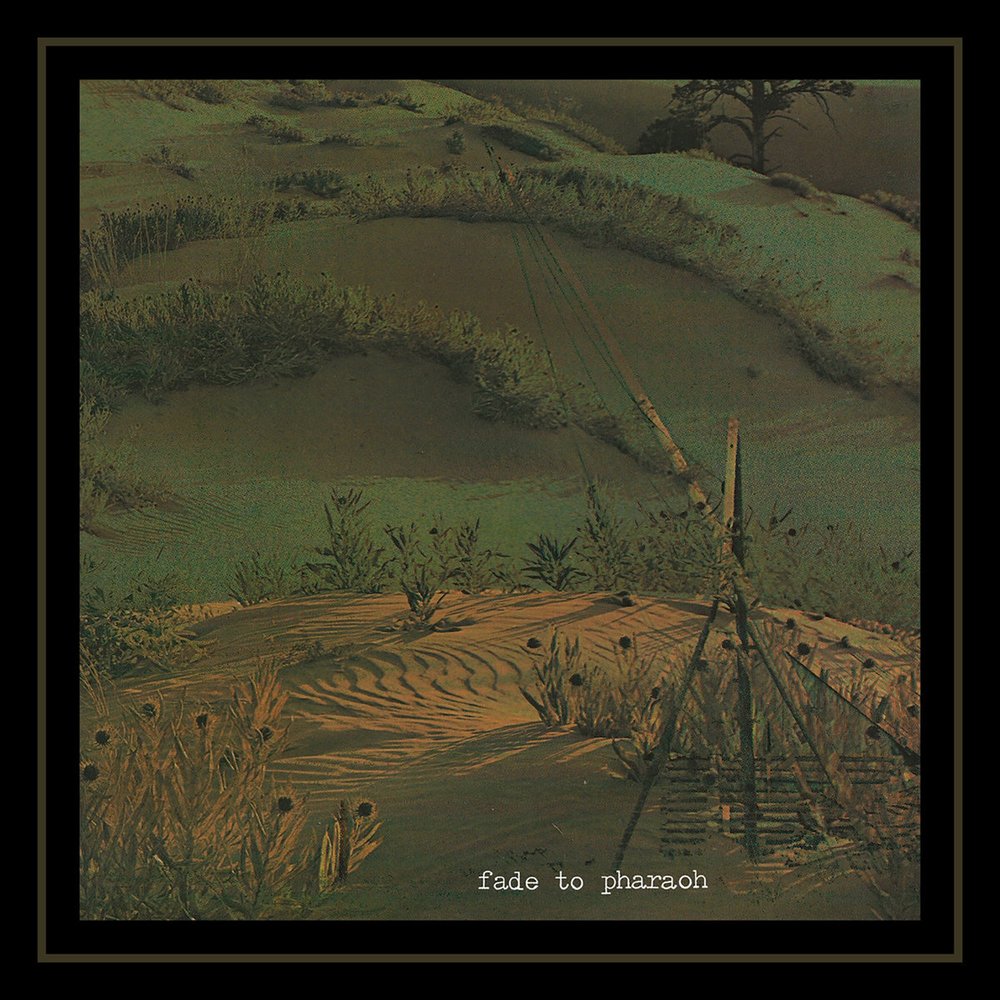

fade to pharaoh - s/t
catalog: ar-010
year: 2021
format: 8" lathe cut
A spotlight on Adam Hess's songwriting, concealed and straight from the heart all at once. Buried deep in a Pennsylvanian valley and unearthed. Jazz rock(?) that leans into slowcore and shoegaze at times. Recorded live to Tascam 424 in November 2019 with additional tracks added from March 2020 - January 2021. Edition of 20 lathe cuts by Cryptic Carousel.
1. pilot
2. written to ten
3. around me
4. when we lose our names
2. written to ten
3. around me
4. when we lose our names
*** lathe cut available on bandcamp ***